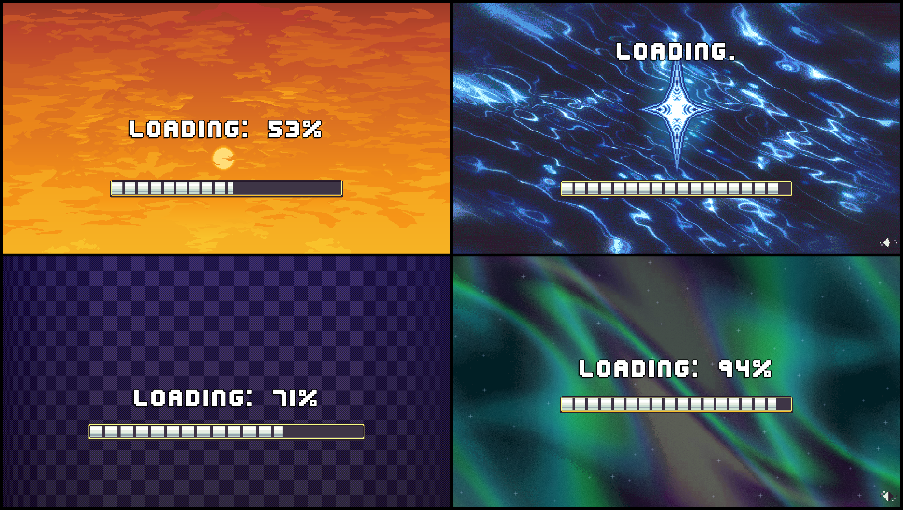

Character Creator Overview
The Character Creator is a modular, prefab based framework for building Character Creation Menus.
A Character Creation Menu allows players to create and customize characters for use in your game. For example, it can be used to create a player character or customize the appearance of an NPC.
The Character Creator is designed to be flexible. Each part of the menu is provided as a separate module, allowing you to combine, configure, and customize the modules to create the menu you want.
Note
The Character Creator is designed to work for Layered Characters only. Its customization features work by modifying the individual layers that make up a Layered Character.
Character Creator Modules
The Character Creator is modular, it's split into a bunch of smaller pieces we call modules, each provides a specific piece of functionality. When these modules are put together they form a complete and functioning Character Creation Menu.
| Module | Description |
|---|---|
| Layer Selectors | Allow the player to change the visual elements for each character layer. |
| Character Preview | Displays an animated or static preview of the character that updates when changes are made. |
| Menu Controls | Essential controls for the menu such as Save, Back and Reset. |
| Character History | Records changes and allows players to revert to previous versions of the character. |
| Randomization Controls | Provides options for randomizing the entire character or individual layers. |
| Loading Screens | Hides the menu while it's being initialized and can display loading progress. |
| Character Display Name | Allows the player to enter a display name for their character. |
Layer Selector Module
A Layer Selector is a UI element that allows the playerto change a specific layer of a Layered Character.
The following selector types are included.
| Selector Type | Description |
|---|---|
| Dropdown Selector | Displays the available options in a dropdown list. |
| Carousel Selector | Displays the current option and allows the player to cycle through other options using left and right controls. |
| Grid Selector | Displays layer options as a grid of preview thumbnails. |
| List Selector | Displays layer options in a vertical or horizontal list, optionally with preview images. |
| Tab Selector | Works alongside another selector and allows the player to switch which layer that selector controls. |

Read More → Layer Selector Setup
Character Preview Module
The Character Preview displays the character currently being customized.
Character previews can be configured with several options:
- Static Sprite Preview – Displays the
preview spritedefined by the Character Type. - Animated Preview – Uses an Animator Controller to play character animations.
- Animation Swapping – Allows additional animations defined by the Character Type to be selected from the menu.
- Rotate Character – Adds controls that allow the player to view the character from different directions.

Menu Controls Module
Menu Controls provide the buttons and controls used to interact with the Character Creation Menu, along with some additional niceties.
These controls include:
- Back/Close Menu button: Closes the menu.
- Save button: Saves the character's changes.
- Reset button: Resets the character.
- Randomize button: Randomizes all layers of the character.

Character History Module
The Character History System records changes made while customizing a character.
The CCM History Tracker component stores a snapshot of the character whenever a change is made. These snapshots can then be used to undo changes or return to an earlier version of the character.
History Tracker
The History Tracker provides the following settings:
- Snapshot Limit: Determines how many snapshots can be stored. The limit can be set between 1 and 100, with a default of 30.
- Preserve First Snapshot: Prevents the first snapshot from being overwritten when the snapshot limit is reached.

Read More → History Tracking System
Undo & Redo
The Undo & Redo functionality allows players to move backward and forward through their character's history.
Use the CCM Timeline Button Handler component on a button to connect it to a History Tracker.

History Panels
A History Panel displays the snapshots recorded by the History Tracker. Players can select an entry to revert the character to that version.
The Character Creator supports several presentation styles:
| Panel Type | Description |
|---|---|
| Text Based | Displays text describing what changed in each snapshot. |
| Sprite Based | Displays a preview image of the character for each snapshot. |
| Hybrid | Displays both a description and preview image for each snapshot. |

Randomization Controls Module
Character randomization functionality can be added in multiple differents ways
- Randomize Button - Randomizes all layers of the character.
- Controlled Randomization - Allows the player to choose which layers should be randomized.
- Layer-Specific Randomization - Allows individual layers to be randomized directly from Layer Selectors.

Read More → Character Randomization
Loading Screen Module
Loading screens hide the Character Creation Menu while it's being setup.
Loading Screens are modular, allowing additional elements such as loading bars and progress text to be added or removed as needed.

Character Display Name Module
The Character Display Name module allows the player to give their character a display name.
The display name can later be displayed anywhere in your game, such as above the character's head.